This package creates short sprint (<6sec) profiles using the split times, or the radar gun data. Mono-exponential equation is used to estimate maximal sprinting speed (MSS), relative acceleration (TAU), and other parameters. These parameters can be used to predict kinematic and kinetics variables and to compare individuals.
Installation
# Install from CRAN
install.packages("shorts")
# Or the development version from GitHub
# install.packages("devtools")
devtools::install_github("mladenjovanovic/shorts")Examples
shorts comes with two sample data sets: split_times and radar_gun_data with N=5 athletes. Let’s load them both:
Profiling using split times
To model sprint performance using split times, distance will be used as predictor and time as target. Since split_times contains data for multiple athletes, let’s extract only one athlete and model it using shorts::model_using_splits() function.
| athlete | bodyweight | distance | time |
|---|---|---|---|
| Kimberley | 55 | 5 | 1.158 |
| Kimberley | 55 | 10 | 1.893 |
| Kimberley | 55 | 15 | 2.541 |
| Kimberley | 55 | 20 | 3.149 |
| Kimberley | 55 | 30 | 4.313 |
| Kimberley | 55 | 40 | 5.444 |
shorts::model_using_splits() returns an object with parameters, model_fit, model returned from stats::nls() function and data used to estimate parameters. Parameters estimated using mono-exponential equation are maximal sprinting speed (MSS), and relative acceleration (TAU). Additional parameters computed from MSS and TAU are maximal acceleration (MAC) and maximal relative power (PMAX) (which is calculated as MAC*MSS/4).
kimberley_profile <- shorts::model_using_splits(
distance = kimberley_data$distance,
time = kimberley_data$time)
kimberley_profile
#> Estimated model parameters
#> --------------------------
#> MSS TAU MAC PMAX
#> 8.591 0.811 10.589 22.743
#> time_correction distance_correction
#> 0.000 0.000
#>
#> Model fit estimators
#> --------------------
#> RSE R_squared minErr maxErr maxAbsErr RMSE MAE MAPE
#> 0.0340 0.9997 -0.0270 0.0529 0.0529 0.0278 0.0233 1.1926
summary(kimberley_profile)
#>
#> Formula: corrected_time ~ TAU * I(LambertW::W(-exp(1)^(-distance/(MSS *
#> TAU) - 1))) + distance/MSS + TAU
#>
#> Parameters:
#> Estimate Std. Error t value Pr(>|t|)
#> MSS 8.5911 0.1225 70.1 2.5e-07 ***
#> TAU 0.8113 0.0458 17.7 6.0e-05 ***
#> ---
#> Signif. codes: 0 '***' 0.001 '**' 0.01 '*' 0.05 '.' 0.1 ' ' 1
#>
#> Residual standard error: 0.034 on 4 degrees of freedom
#>
#> Number of iterations to convergence: 4
#> Achieved convergence tolerance: 4.06e-06
coef(kimberley_profile)
#> MSS TAU MAC PMAX
#> 8.591 0.811 10.589 22.743
#> time_correction distance_correction
#> 0.000 0.000To return the predicted outcome (in this case time variable), use predict() function:
predict(kimberley_profile)
#> [1] 1.21 1.90 2.52 3.12 4.30 5.47To create a simple plot, use S3 plot() method:
plot(kimberley_profile) +
theme_bw()
If you are interested in calculating average split velocity, use shorts::format_splits()
kable(shorts::format_splits(
distance = kimberley_data$distance,
time = kimberley_data$time))| split | split_distance_start | split_distance_stop | split_distance | split_time_start | split_time_stop | split_time | split_mean_velocity |
|---|---|---|---|---|---|---|---|
| 1 | 0 | 5 | 5 | 0 | 1.158 | 1.158 | 4.317789…. |
| 2 | 5 | 10 | 5 | 1.158 | 1.893 | 0.735 | 6.802721…. |
| 3 | 10 | 15 | 5 | 1.893 | 2.541 | 0.648 | 7.716049…. |
| 4 | 15 | 20 | 5 | 2.541 | 3.149 | 0.608 | 8.223684…. |
| 5 | 20 | 30 | 10 | 3.149 | 4.313 | 1.164 | 8.591065…. |
| 6 | 30 | 40 | 10 | 4.313 | 5.444 | 1.131 | 8.841732…. |
Let’s plot observed vs fitted split times. For this we can use data returned from shorts::model_using_splits() since it contains pred_time column.
ggplot(kimberley_profile$data, aes(x = distance)) +
theme_bw() +
geom_point(aes(y = time)) +
geom_line(aes(y = pred_time)) +
xlab("Distance (m)") +
ylab("Time (s)")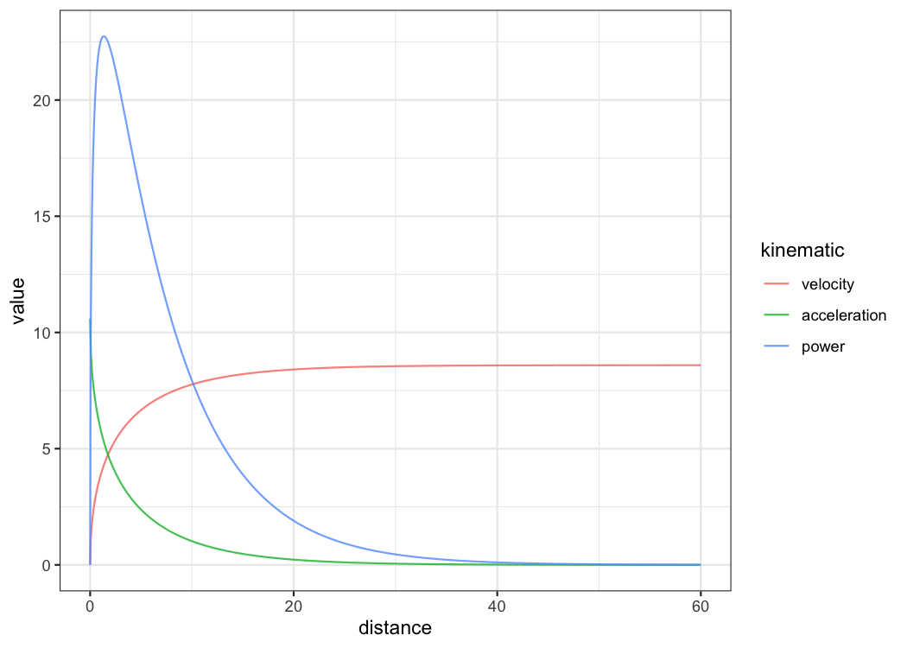
To plot predicted velocity, acceleration, air resistance, force, and power over distance, use shorts:predict_XXX(). Please note that to calculate force, air resistance, and power, we need Kimberley’s bodymass and height (as well as other characteristics such as air pressure, temperature and wind - see get_air_resistance() function).
kimberley_bodymass <- 60 # in kilograms
kimberley_bodyheight <- 1.7 # in meters
kimberley_pred <- tibble(
distance = seq(0, 40, length.out = 1000),
# Velocity
pred_velocity = shorts::predict_velocity_at_distance(
distance,
kimberley_profile$parameters$MSS,
kimberley_profile$parameters$TAU),
# Acceleration
pred_acceleration = shorts::predict_acceleration_at_distance(
distance,
kimberley_profile$parameters$MSS,
kimberley_profile$parameters$TAU),
# Air resistance
pred_air_resistance = shorts::predict_air_resistance_at_distance(
distance,
kimberley_profile$parameters$MSS,
kimberley_profile$parameters$TAU,
bodymass = kimberley_bodymass,
bodyheight = kimberley_bodyheight),
# Force
pred_force = shorts::predict_force_at_distance(
distance,
kimberley_profile$parameters$MSS,
kimberley_profile$parameters$TAU,
bodymass = kimberley_bodymass,
bodyheight = kimberley_bodyheight),
# Power
pred_power = shorts::predict_power_at_distance(
distance,
kimberley_profile$parameters$MSS,
kimberley_profile$parameters$TAU,
bodymass = kimberley_bodymass,
bodyheight = kimberley_bodyheight),
)
# Convert to long
kimberley_pred <- gather(kimberley_pred, "metric", "value", -distance)
ggplot(kimberley_pred, aes(x = distance, y = value)) +
theme_bw() +
geom_line() +
facet_wrap(~metric, scales = "free_y") +
xlab("Distance (m)") +
ylab(NULL)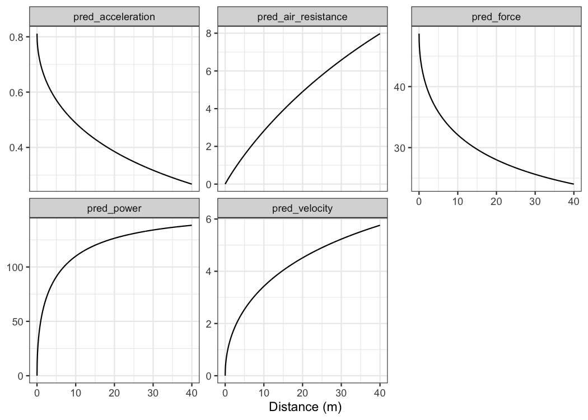
To do prediction simpler, use shorts::predict_kinematics() function. This will provide kinetics and kinematics for 0-6s sprint using 100Hz.
predicted_kinematics <- predict_kinematics(
kimberley_profile,
bodymass = kimberley_bodymass,
bodyheight = kimberley_bodyheight)
kable(head(predicted_kinematics))| time | distance | velocity | acceleration | bodymass | net_horizontal_force | air_resistance | horizontal_force | horizontal_force_relative | vertical_force | resultant_force | resultant_force_relative | power | relative_power | RF | force_angle |
|---|---|---|---|---|---|---|---|---|---|---|---|---|---|---|---|
| 0.00 | 0.000 | 0.000 | 10.59 | 60 | 635 | 0.000 | 635 | 10.59 | 589 | 866 | 14.4 | 0 | 0.00 | 0.734 | 42.8 |
| 0.01 | 0.001 | 0.105 | 10.46 | 60 | 628 | 0.003 | 628 | 10.46 | 589 | 860 | 14.3 | 66 | 1.10 | 0.729 | 43.2 |
| 0.02 | 0.002 | 0.209 | 10.33 | 60 | 620 | 0.011 | 620 | 10.33 | 589 | 855 | 14.2 | 130 | 2.16 | 0.725 | 43.5 |
| 0.03 | 0.005 | 0.312 | 10.21 | 60 | 612 | 0.023 | 612 | 10.21 | 589 | 849 | 14.2 | 191 | 3.18 | 0.721 | 43.9 |
| 0.04 | 0.008 | 0.413 | 10.08 | 60 | 605 | 0.041 | 605 | 10.08 | 589 | 844 | 14.1 | 250 | 4.17 | 0.717 | 44.2 |
| 0.05 | 0.013 | 0.513 | 9.96 | 60 | 597 | 0.063 | 597 | 9.96 | 589 | 839 | 14.0 | 307 | 5.11 | 0.712 | 44.6 |
To get model residuals, use residuals() function:
residuals(kimberley_profile)
#> [1] 0.05293 0.00402 -0.01997 -0.02699 -0.01376 0.02232Package shorts comes with find_XXX() family of functions that allow finding peak power and it’s location, as well as critical distance over which velocity, acceleration, or power drops below certain threshold:
# Peak power and location
shorts::find_max_power_distance(
kimberley_profile$parameters$MSS,
kimberley_profile$parameters$TAU
)
#> $max_power
#> [1] 1728
#>
#> $distance
#> [1] 1.42
# Distance over which power is over 50%
shorts::find_power_critical_distance(
MSS = kimberley_profile$parameters$MSS,
TAU = kimberley_profile$parameters$TAU,
percent = 0.5
)
#> $lower
#> [1] 0.0856
#>
#> $upper
#> [1] 8.36
# Distance over which acceleration is under 50%
shorts::find_acceleration_critical_distance(
MSS = kimberley_profile$parameters$MSS,
TAU = kimberley_profile$parameters$TAU,
percent = 0.5
)
#> [1] 1.35
# Distance over which velocity is over 95%
shorts::find_velocity_critical_distance(
MSS = kimberley_profile$parameters$MSS,
TAU = kimberley_profile$parameters$TAU,
percent = 0.95
)
#> [1] 14.3Mixed-effect models
Each individual can be modeled separately, or we can perform non-linear mixed model using nlme() function from nlme package (Pinheiro et al., 2019). This is done using shorts::mixed_model_using_splits():
mixed_model <- shorts::mixed_model_using_splits(
data = split_times,
distance = "distance",
time = "time",
athlete = "athlete"
)
mixed_model
#> Estimated fixed model parameters
#> --------------------------------
#> MSS TAU MAC PMAX
#> 8.065 0.655 12.309 24.818
#> time_correction distance_correction
#> 0.000 0.000
#>
#> Estimated random model parameters
#> ----------------------------------
#> athlete MSS TAU MAC PMAX time_correction distance_correction
#> 1 James 9.69 0.847 11.4 27.7 0 0
#> 2 Jim 7.83 0.505 15.5 30.4 0 0
#> 3 John 7.78 0.727 10.7 20.8 0 0
#> 4 Kimberley 8.57 0.802 10.7 22.9 0 0
#> 5 Samantha 6.45 0.395 16.3 26.4 0 0
#>
#> Model fit estimators
#> --------------------
#> RSE R_squared minErr maxErr maxAbsErr RMSE MAE MAPE
#> 0.0260 0.9998 -0.0293 0.0496 0.0496 0.0214 0.0172 0.9019
summary(mixed_model)
#> Nonlinear mixed-effects model fit by maximum likelihood
#> Model: corrected_time ~ TAU * I(LambertW::W(-exp(1)^(-distance/(MSS * TAU) - 1))) + distance/MSS + TAU
#> Data: train
#> AIC BIC logLik
#> -75.1 -66.7 43.5
#>
#> Random effects:
#> Formula: list(MSS ~ 1, TAU ~ 1)
#> Level: athlete
#> Structure: General positive-definite, Log-Cholesky parametrization
#> StdDev Corr
#> MSS 1.066 MSS
#> TAU 0.178 0.877
#> Residual 0.026
#>
#> Fixed effects: MSS + TAU ~ 1
#> Value Std.Error DF t-value p-value
#> MSS 8.06 0.495 24 16.30 0
#> TAU 0.66 0.084 24 7.82 0
#> Correlation:
#> MSS
#> TAU 0.874
#>
#> Standardized Within-Group Residuals:
#> Min Q1 Med Q3 Max
#> -1.909 -0.605 0.154 0.523 1.129
#>
#> Number of Observations: 30
#> Number of Groups: 5
coef(mixed_model)
#> $fixed
#> MSS TAU MAC PMAX
#> 8.065 0.655 12.309 24.818
#> time_correction distance_correction
#> 0.000 0.000
#>
#> $random
#> athlete MSS TAU MAC PMAX time_correction distance_correction
#> 1 James 9.69 0.847 11.4 27.7 0 0
#> 2 Jim 7.83 0.505 15.5 30.4 0 0
#> 3 John 7.78 0.727 10.7 20.8 0 0
#> 4 Kimberley 8.57 0.802 10.7 22.9 0 0
#> 5 Samantha 6.45 0.395 16.3 26.4 0 0
plot(mixed_model) +
theme_bw()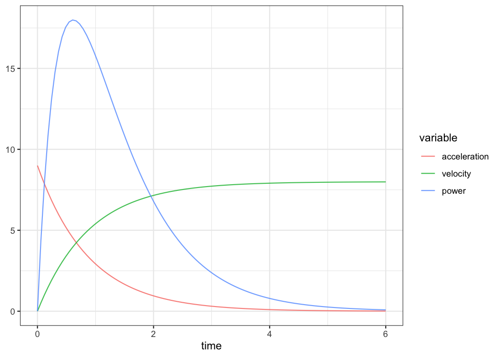
kable(mixed_model$parameters$random)| athlete | MSS | TAU | MAC | PMAX | time_correction | distance_correction |
|---|---|---|---|---|---|---|
| James | 9.69 | 0.847 | 11.4 | 27.7 | 0 | 0 |
| Jim | 7.83 | 0.505 | 15.5 | 30.4 | 0 | 0 |
| John | 7.78 | 0.727 | 10.7 | 20.8 | 0 | 0 |
| Kimberley | 8.57 | 0.802 | 10.7 | 22.9 | 0 | 0 |
| Samantha | 6.45 | 0.395 | 16.3 | 26.4 | 0 | 0 |
shorts::mixed_model_using_splits() return the similar object, but parameters contain two elements: fixed and random.
Let’s plot predicted velocity over distance for athletes in the split_times data set:
velocity_over_distance <- merge(
mixed_model$parameters$random,
data.frame(distance = seq(0, 40, length.out = 1000))
)
velocity_over_distance$pred_velocity <- with(velocity_over_distance,
shorts::predict_velocity_at_distance(
distance = distance,
MSS = MSS,
TAU = TAU)
)
ggplot(velocity_over_distance, aes(x = distance, y = pred_velocity, color = athlete)) +
theme_bw() +
geom_line() +
xlab("Distance (m)") +
ylab("Predicted velocity (m/s)")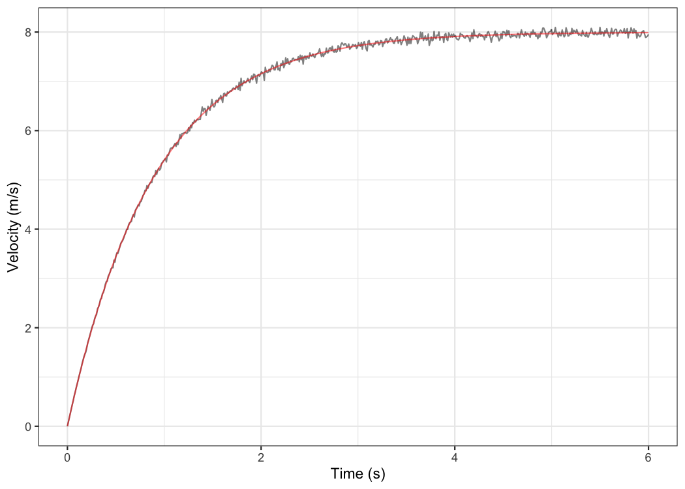
To modify random effects, which are by default MSS and TAU (MSS + TAU ~ 1), use the random parameter. For example, we can assume same TAU for all athletes and only use MSS as random effect:
mixed_model <- shorts::mixed_model_using_splits(
data = split_times,
distance = "distance",
time = "time",
athlete = "athlete",
random = MSS ~ 1
)
mixed_model
#> Estimated fixed model parameters
#> --------------------------------
#> MSS TAU MAC PMAX
#> 7.937 0.628 12.644 25.087
#> time_correction distance_correction
#> 0.000 0.000
#>
#> Estimated random model parameters
#> ----------------------------------
#> athlete MSS TAU MAC PMAX time_correction distance_correction
#> 1 James 9.02 0.628 14.4 32.4 0 0
#> 2 Jim 8.11 0.628 12.9 26.2 0 0
#> 3 John 7.58 0.628 12.1 22.9 0 0
#> 4 Kimberley 8.14 0.628 13.0 26.4 0 0
#> 5 Samantha 6.83 0.628 10.9 18.6 0 0
#>
#> Model fit estimators
#> --------------------
#> RSE R_squared minErr maxErr maxAbsErr RMSE MAE MAPE
#> 0.0764 0.9980 -0.1023 0.1599 0.1599 0.0698 0.0585 2.6856Profiling using radar gun data
The radar gun data is modeled using measured velocity as target variable and time as predictor. Individual analysis is performed using shorts::model_using_radar() function. Let’s do analysis for Jim:
jim_data <- filter(radar_gun_data, athlete == "Jim")
jim_profile <- shorts::model_using_radar(
time = jim_data$time,
velocity = jim_data$velocity
)
jim_profile
#> Estimated model parameters
#> --------------------------
#> MSS TAU MAC PMAX
#> 7.998 0.889 9.000 17.995
#> time_correction distance_correction
#> 0.000 0.000
#>
#> Model fit estimators
#> --------------------
#> RSE R_squared minErr maxErr maxAbsErr RMSE MAE MAPE
#> 0.0506 0.9992 -0.1510 0.1642 0.1642 0.0505 0.0393 NaN
summary(jim_profile)
#>
#> Formula: velocity ~ MSS * (1 - exp(1)^(-(corrected_time)/TAU))
#>
#> Parameters:
#> Estimate Std. Error t value Pr(>|t|)
#> MSS 7.99793 0.00307 2606 <2e-16 ***
#> TAU 0.88866 0.00156 568 <2e-16 ***
#> ---
#> Signif. codes: 0 '***' 0.001 '**' 0.01 '*' 0.05 '.' 0.1 ' ' 1
#>
#> Residual standard error: 0.0506 on 598 degrees of freedom
#>
#> Number of iterations to convergence: 3
#> Achieved convergence tolerance: 9.31e-07
plot(jim_profile) +
theme_bw()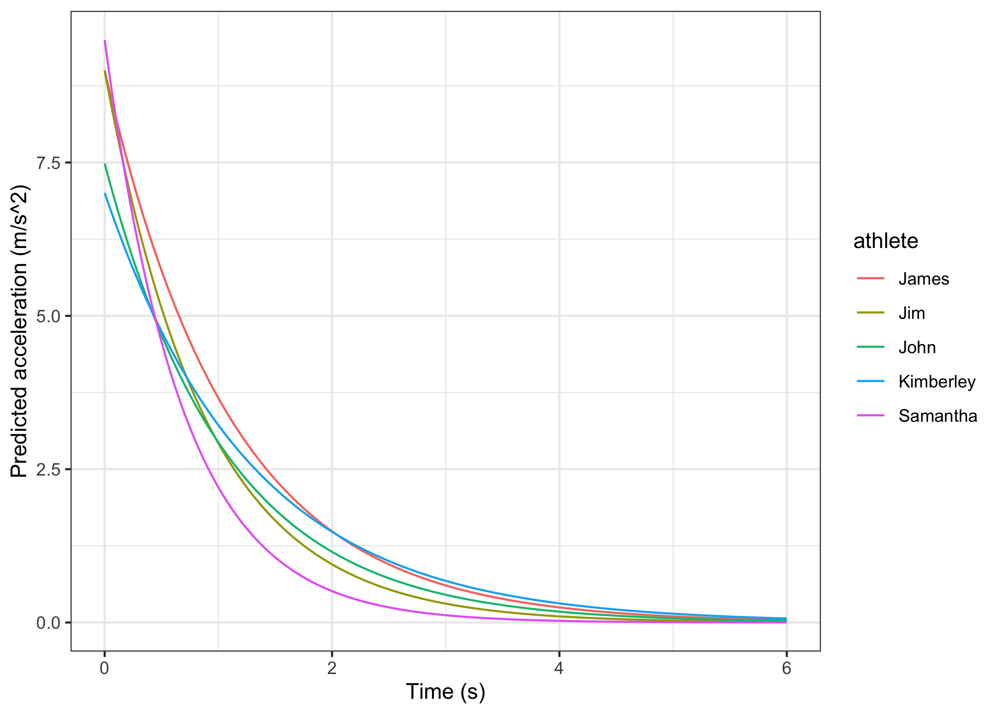
The object returned from shorts::model_using_radar() is same as object returned from shorts::model_using_splits(). Let’s plot Jim’s measured velocity and predicted velocity:
ggplot(jim_profile$data, aes(x = time)) +
theme_bw() +
geom_line(aes(y = velocity), alpha = 0.5) +
geom_line(aes(y = pred_velocity), color = "red", alpha = 0.5) +
xlab("Time (s)") +
ylab("Velocity (m/s)")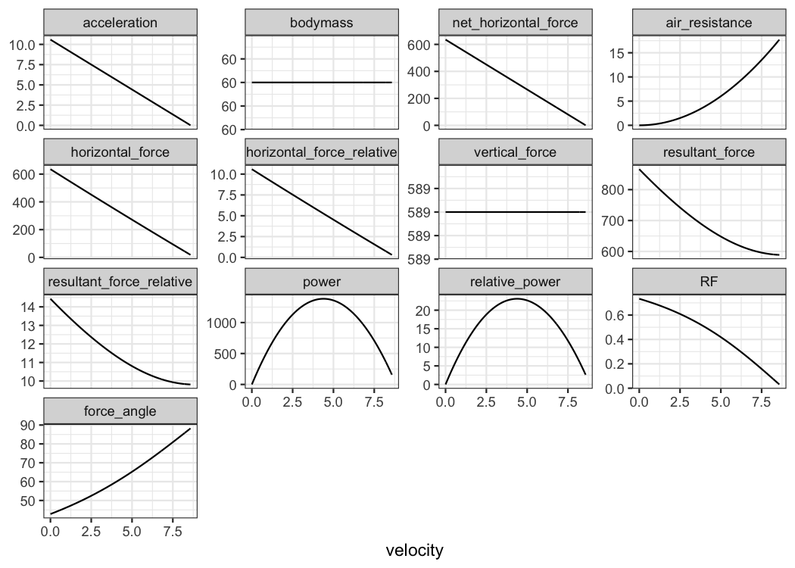
Radar gun data can be modeled individually or using non-linear mixed model implemented in shorts::mixed_model_using_radar():
mixed_model <- shorts::mixed_model_using_radar(
data = radar_gun_data,
time = "time",
velocity = "velocity",
athlete = "athlete"
)
mixed_model
#> Estimated fixed model parameters
#> --------------------------------
#> MSS TAU MAC PMAX
#> 8.30 1.01 8.24 17.09
#> time_correction distance_correction
#> 0.00 0.00
#>
#> Estimated random model parameters
#> ----------------------------------
#> athlete MSS TAU MAC PMAX time_correction distance_correction
#> 1 James 10.00 1.111 9.00 22.5 0 0
#> 2 Jim 8.00 0.889 9.00 18.0 0 0
#> 3 John 8.00 1.069 7.48 15.0 0 0
#> 4 Kimberley 9.01 1.286 7.01 15.8 0 0
#> 5 Samantha 6.50 0.685 9.50 15.4 0 0
#>
#> Model fit estimators
#> --------------------
#> RSE R_squared minErr maxErr maxAbsErr RMSE MAE MAPE
#> 0.0516 0.9994 -0.2191 0.1983 0.2191 0.0516 0.0395 NaN
summary(mixed_model)
#> Nonlinear mixed-effects model fit by maximum likelihood
#> Model: velocity ~ MSS * (1 - exp(1)^(-(corrected_time)/TAU))
#> Data: train
#> AIC BIC logLik
#> -9150 -9114 4581
#>
#> Random effects:
#> Formula: list(MSS ~ 1, TAU ~ 1)
#> Level: athlete
#> Structure: General positive-definite, Log-Cholesky parametrization
#> StdDev Corr
#> MSS 1.1654 MSS
#> TAU 0.2050 0.811
#> Residual 0.0516
#>
#> Fixed effects: MSS + TAU ~ 1
#> Value Std.Error DF t-value p-value
#> MSS 8.30 0.521 2994 15.9 0
#> TAU 1.01 0.092 2994 11.0 0
#> Correlation:
#> MSS
#> TAU 0.811
#>
#> Standardized Within-Group Residuals:
#> Min Q1 Med Q3 Max
#> -3.840000 -0.593297 -0.000256 0.611162 4.242735
#>
#> Number of Observations: 3000
#> Number of Groups: 5
plot(mixed_model) +
theme_bw()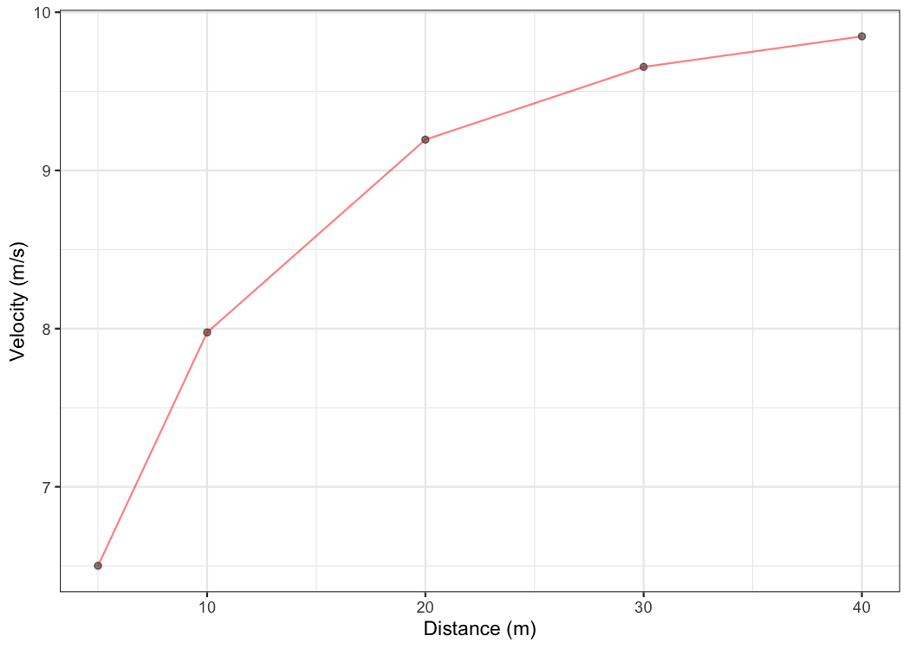
kable(mixed_model$parameters$random)| athlete | MSS | TAU | MAC | PMAX | time_correction | distance_correction |
|---|---|---|---|---|---|---|
| James | 10.00 | 1.111 | 9.00 | 22.5 | 0 | 0 |
| Jim | 8.00 | 0.889 | 9.00 | 18.0 | 0 | 0 |
| John | 8.00 | 1.069 | 7.48 | 15.0 | 0 | 0 |
| Kimberley | 9.01 | 1.286 | 7.00 | 15.8 | 0 | 0 |
| Samantha | 6.50 | 0.685 | 9.50 | 15.4 | 0 | 0 |
Let’s plot predicted acceleration over time (0-6sec) for athletes in the radar_gun_data data set:
model_predictions <- shorts::predict_kinematics(mixed_model)
ggplot(model_predictions, aes(x = time, y = acceleration, color = athlete)) +
theme_bw() +
geom_line() +
xlab("Time (s)") +
ylab("Predicted acceleration (m/s^2)")
Force-Velocity Profiling
To estimate Force-Velocity profile using approach by Samozino et al. (2016), use shorts::get_FV_profile():
kimberley_fv <- shorts::get_FV_profile(
MSS = kimberley_profile$parameters$MSS,
TAU = kimberley_profile$parameters$TAU,
# These are needed to estimate air resistance
bodymass = kimberley_bodymass,
bodyheight = kimberley_bodyheight
)
kimberley_fv
#> Estimated Force-Velocity Profile
#> --------------------------
#> bodymass F0 F0_rel V0 Pmax
#> 6.00e+01 6.30e+02 1.05e+01 8.83e+00 1.39e+03
#> Pmax_relative FV_slope RFmax_cutoff RFmax Drf
#> 2.32e+01 -1.19e+00 3.00e-01 5.99e-01 -1.04e-01
#> RSE_FV RSE_Drf
#> 9.95e-01 9.46e-03
plot(kimberley_fv) +
theme_bw()
Using corrections
You have probably noticed that estimated MSS and TAU were a bit too high for splits data. Biased estimates are due to differences in starting positions and timing triggering methods for certain measurement approaches (e.g. starting behind first timing gate, or allowing for body rocking). This topic is further explained in sprint-corrections vignette that can be accessed by typing:
vignette("sprint-corrections")Here I will provide quick summary. Often, this bias in estimates is dealt with by using heuristic rule of thumb of adding time_correction to split times (e.g. from 0.3-0.5sec; see more in Haugen et al., 2012). This functionality is available in all covered shorts functions:
mixed_model_corrected <- shorts::mixed_model_using_splits(
data = split_times,
distance = "distance",
time = "time",
athlete = "athlete",
time_correction = 0.3
)
mixed_model_corrected
#> Estimated fixed model parameters
#> --------------------------------
#> MSS TAU MAC PMAX
#> 8.47 1.15 7.34 15.55
#> time_correction distance_correction
#> 0.30 0.00
#>
#> Estimated random model parameters
#> ----------------------------------
#> athlete MSS TAU MAC PMAX time_correction distance_correction
#> 1 James 10.55 1.495 7.05 18.6 0.3 0
#> 2 Jim 8.05 0.922 8.73 17.6 0.3 0
#> 3 John 8.13 1.230 6.61 13.4 0.3 0
#> 4 Kimberley 9.11 1.372 6.64 15.1 0.3 0
#> 5 Samantha 6.53 0.756 8.64 14.1 0.3 0
#>
#> Model fit estimators
#> --------------------
#> RSE R_squared minErr maxErr maxAbsErr RMSE MAE MAPE
#> 0.01520 0.99994 -0.04116 0.02030 0.04116 0.01244 0.00909 0.49682
summary(mixed_model_corrected)
#> Nonlinear mixed-effects model fit by maximum likelihood
#> Model: corrected_time ~ TAU * I(LambertW::W(-exp(1)^(-distance/(MSS * TAU) - 1))) + distance/MSS + TAU
#> Data: train
#> AIC BIC logLik
#> -96.9 -88.5 54.5
#>
#> Random effects:
#> Formula: list(MSS ~ 1, TAU ~ 1)
#> Level: athlete
#> Structure: General positive-definite, Log-Cholesky parametrization
#> StdDev Corr
#> MSS 1.3285 MSS
#> TAU 0.2779 0.924
#> Residual 0.0152
#>
#> Fixed effects: MSS + TAU ~ 1
#> Value Std.Error DF t-value p-value
#> MSS 8.47 0.616 24 13.76 0
#> TAU 1.15 0.129 24 8.93 0
#> Correlation:
#> MSS
#> TAU 0.923
#>
#> Standardized Within-Group Residuals:
#> Min Q1 Med Q3 Max
#> -1.336 -0.407 -0.133 0.328 2.708
#>
#> Number of Observations: 30
#> Number of Groups: 5
plot(mixed_model_corrected) +
theme_bw()
kable(mixed_model_corrected$parameters$random)| athlete | MSS | TAU | MAC | PMAX | time_correction | distance_correction |
|---|---|---|---|---|---|---|
| James | 10.55 | 1.495 | 7.05 | 18.6 | 0.3 | 0 |
| Jim | 8.05 | 0.922 | 8.73 | 17.6 | 0.3 | 0 |
| John | 8.13 | 1.230 | 6.61 | 13.4 | 0.3 | 0 |
| Kimberley | 9.12 | 1.372 | 6.64 | 15.1 | 0.3 | 0 |
| Samantha | 6.53 | 0.756 | 8.64 | 14.1 | 0.3 | 0 |
And time_correction can also be used in predict_XXX() and find_XXX() family of functions:
velocity_over_distance_corrected <- merge(
mixed_model_corrected$parameters$random,
data.frame(distance = seq(0, 40, length.out = 1000))
)
velocity_over_distance_corrected$pred_velocity <- with(velocity_over_distance,
shorts::predict_velocity_at_distance(
distance = distance,
MSS = MSS,
TAU = TAU,
time_correction = 0.3)
)
ggplot(velocity_over_distance_corrected, aes(x = distance, y = pred_velocity, color = athlete)) +
theme_bw() +
geom_line() +
xlab("Distance (m)") +
ylab("Predicted velocity (m/s)")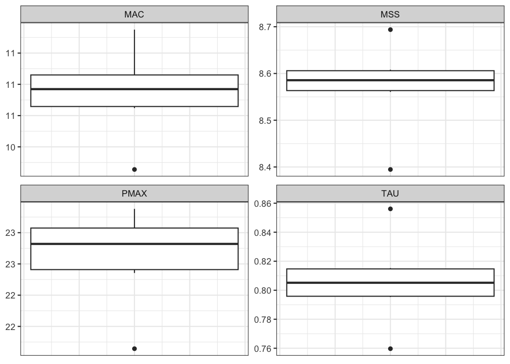
Instead of providing for time_correction, this parameter can be estimated using shorts::model_using_splits_with_time_correction() and shorts::mixed_model_using_splits_with_time_correction():
kimberley_profile_with_time_correction <- shorts::model_using_splits_with_time_correction(
distance = kimberley_data$distance,
time = kimberley_data$time)
kimberley_profile_with_time_correction
#> Estimated model parameters
#> --------------------------
#> MSS TAU MAC PMAX
#> 8.975 1.235 7.268 16.307
#> time_correction distance_correction
#> 0.235 0.000
#>
#> Model fit estimators
#> --------------------
#> RSE R_squared minErr maxErr maxAbsErr RMSE MAE MAPE
#> 0.001129 1.000000 -0.001209 0.001181 0.001209 0.000798 0.000659 0.028235
# Mixed-effect model using `time_correction` as fixed effect only
# To use `time_correction` as random effects, use random = MSS + TAU + time_correction ~ 1
mixed_model_with_time_correction <- shorts::mixed_model_using_splits_with_time_correction(
data = split_times,
distance = "distance",
time = "time",
athlete = "athlete"
)
# Parameters
mixed_model_with_time_correction
#> Estimated fixed model parameters
#> --------------------------------
#> MSS TAU MAC PMAX
#> 8.304 0.969 8.572 17.796
#> time_correction distance_correction
#> 0.199 0.000
#>
#> Estimated random model parameters
#> ----------------------------------
#> athlete MSS TAU MAC PMAX time_correction distance_correction
#> 1 James 10.19 1.243 8.20 20.9 0.199 0
#> 2 Jim 7.95 0.764 10.40 20.7 0.199 0
#> 3 John 8.00 1.049 7.62 15.2 0.199 0
#> 4 Kimberley 8.90 1.162 7.66 17.0 0.199 0
#> 5 Samantha 6.49 0.626 10.37 16.8 0.199 0
#>
#> Model fit estimators
#> --------------------
#> RSE R_squared minErr maxErr maxAbsErr RMSE MAE MAPE
#> 0.00598 0.99999 -0.01651 0.00937 0.01651 0.00488 0.00348 0.18614
plot(mixed_model_with_time_correction) +
theme_bw()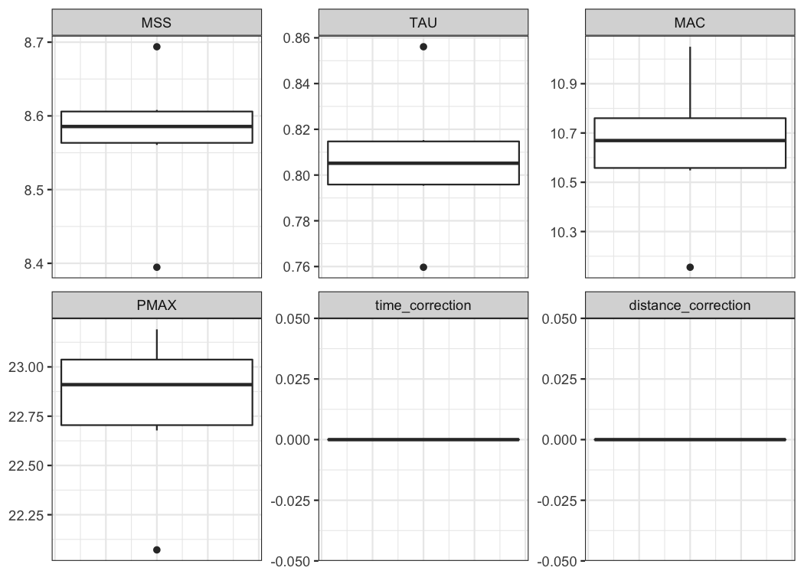
kable(mixed_model_with_time_correction$parameters$random)| athlete | MSS | TAU | MAC | PMAX | time_correction | distance_correction |
|---|---|---|---|---|---|---|
| James | 10.19 | 1.243 | 8.20 | 20.9 | 0.199 | 0 |
| Jim | 7.95 | 0.764 | 10.40 | 20.7 | 0.199 | 0 |
| John | 8.00 | 1.049 | 7.62 | 15.2 | 0.199 | 0 |
| Kimberley | 8.90 | 1.162 | 7.66 | 17.0 | 0.199 | 0 |
| Samantha | 6.49 | 0.626 | 10.37 | 16.8 | 0.199 | 0 |
For more details, please refer to sprint-corrections vignette.
Leave-One-Out Cross-Validation (LOOCV)
...model_using_splits..() family of functions come with LOOCV feature that is performed by setting the function parameter LOOCV = TRUE. This feature is very useful for checking model parameters robustness and model predictions on unseen data. LOOCV involve iterative model building and testing by removing observation one by one and making predictions for them. Let’s use Kimberley again, but this time perform LOOCV:
kimberley_profile_LOOCV <- shorts::model_using_splits(
distance = kimberley_data$distance,
time = kimberley_data$time,
LOOCV = TRUE)
kimberley_profile_LOOCV
#> Estimated model parameters
#> --------------------------
#> MSS TAU MAC PMAX
#> 8.591 0.811 10.589 22.743
#> time_correction distance_correction
#> 0.000 0.000
#>
#> Model fit estimators
#> --------------------
#> RSE R_squared minErr maxErr maxAbsErr RMSE MAE MAPE
#> 0.0340 0.9997 -0.0270 0.0529 0.0529 0.0278 0.0233 1.1926
#>
#>
#> Leave-One-Out Cross-Validation
#> ------------------------------
#> Parameters:
#> MSS TAU MAC PMAX time_correction distance_correction
#> 1 8.69 0.856 10.2 22.1 0 0
#> 2 8.60 0.815 10.5 22.7 0 0
#> 3 8.56 0.795 10.8 23.0 0 0
#> 4 8.57 0.797 10.8 23.0 0 0
#> 5 8.61 0.813 10.6 22.8 0 0
#> 6 8.39 0.760 11.1 23.2 0 0
#>
#> Model fit:
#> RSE R_squared minErr maxErr maxAbsErr RMSE MAE MAPE
#> NA 0.9990 -0.0344 0.0801 0.0801 0.0474 0.0392 1.7227Box-plot is suitable method for plotting estimated parameters:
LOOCV_parameters <- gather(kimberley_profile_LOOCV$LOOCV$parameters) %>%
mutate(key = factor(
key,
levels = c("MSS", "TAU", "MAC", "PMAX", "time_correction", "distance_correction")
))
ggplot(LOOCV_parameters, aes(y = value)) +
theme_bw() +
geom_boxplot() +
facet_wrap(~key, scales = "free") +
ylab(NULL) +
theme(axis.ticks.x = element_blank(), axis.text.x = element_blank())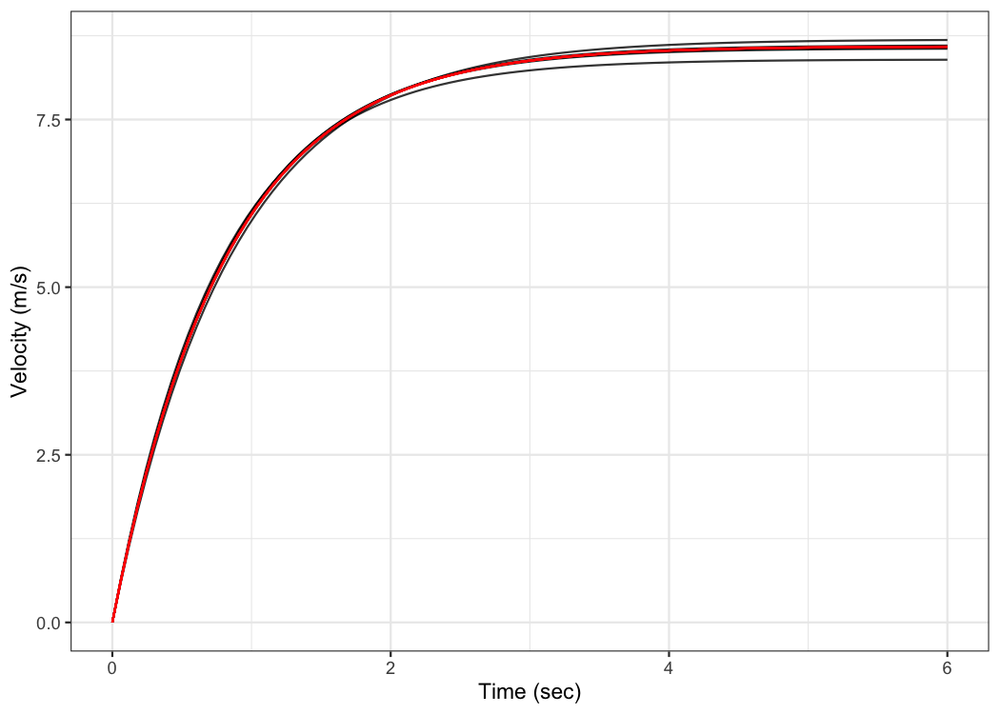
Let’s plot model LOOCV predictions and training (when using all data set) predictions against observed performance:
kimberley_data <- kimberley_data %>%
mutate(
pred_time = predict(kimberley_profile_LOOCV),
LOOCV_time = kimberley_profile_LOOCV$LOOCV$data$pred_time
)
ggplot(kimberley_data, aes(x = distance)) +
theme_bw() +
geom_point(aes(y = time)) +
geom_line(aes(y = pred_time), color = "black") +
geom_line(aes(y = LOOCV_time), color = "red") +
xlab("Distance (m)") +
ylab("Time (s)")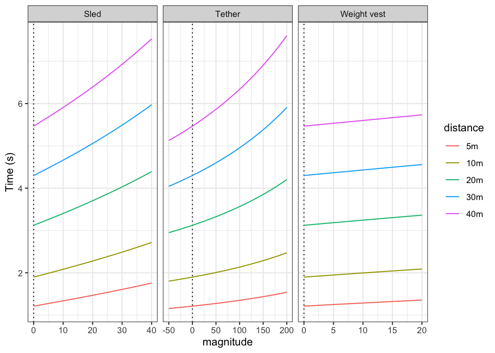
Let’s plot predicted velocity using LOOCV estimate parameters to check robustness of the model predictions:
plot_data <- kimberley_profile_LOOCV$LOOCV$parameters %>%
mutate(LOOCV = row_number())
plot_data <- expand_grid(
data.frame(time = seq(0, 6, length.out = 100)),
plot_data
) %>%
mutate(
LOOCV_velocity = predict_velocity_at_time(
time = time,
MSS = MSS,
TAU = TAU),
velocity = predict_velocity_at_time(
time = time,
MSS = kimberley_profile_LOOCV$parameters$MSS,
TAU = kimberley_profile_LOOCV$parameters$TAU)
)
ggplot(plot_data, aes(x = time, y = LOOCV_velocity, group = LOOCV)) +
theme_bw() +
geom_line(alpha = 0.8) +
geom_line(aes(y = velocity), color = "red", size = 0.5) +
xlab("Time (sec)") +
ylab("Velocity (m/s)")Publications
Here are the submitted publications using the package:
Jovanović, M., Vescovi, J.D. (2020). shorts: An R Package for Modeling Short Sprints. Submitted to Journal of Statistical Software. Preprint available at SportRXive: http://osf.io/4jw62/
Vescovi, J.D., Jovanović, M. (2020). Sprint mechanical characteristics of female soccer players: A novel approach for correction of timing gate starts. Submitted to Frontiers in Sports and Active Living
Citation
To cite shorts, please use the following command to get the BibTex entry:
citation("shorts")References
Please refer to these publications for more information on short sprints modeling using mono-exponential equation, as well as on performing mixed non-linear models with nlme package:
Chelly SM, Denis C. 2001. Leg power and hopping stiffness: relationship with sprint running performance: Medicine and Science in Sports and Exercise:326–333. DOI: 10.1097/00005768-200102000-00024.
Clark KP, Rieger RH, Bruno RF, Stearne DJ. 2017. The NFL Combine 40-Yard Dash: How Important is Maximum Velocity? Journal of Strength and Conditioning Research:1. DOI: 10.1519/JSC.0000000000002081.
Furusawa K, Hill AV, and Parkinson JL. The dynamics of" sprint" running. Proceedings of the Royal Society of London. Series B, Containing Papers of a Biological Character 102 (713): 29-42, 1927
Greene PR. 1986. Predicting sprint dynamics from maximum-velocity measurements. Mathematical Biosciences 80:1–18. DOI: 10.1016/0025-5564(86)90063-5.
Haugen TA, Tønnessen E, Seiler SK. 2012. The Difference Is in the Start: Impact of Timing and Start Procedure on Sprint Running Performance: Journal of Strength and Conditioning Research 26:473–479. DOI: 10.1519/JSC.0b013e318226030b.
Pinheiro J, Bates D, DebRoy S, Sarkar D, R Core Team. 2019. nlme: Linear and nonlinear mixed effects models.
Samozino P, Rabita G, Dorel S, Slawinski J, Peyrot N, Saez de Villarreal E, Morin J-B. 2016. A simple method for measuring power, force, velocity properties, and mechanical effectiveness in sprint running: Simple method to compute sprint mechanics. Scandinavian Journal of Medicine & Science in Sports 26:648–658. DOI: 10.1111/sms.12490.
Samozino P. 2018. A Simple Method for Measuring Force, Velocity and Power Capabilities and Mechanical Effectiveness During Sprint Running. In: Morin J-B, Samozino P eds. Biomechanics of Training and Testing. Cham: Springer International Publishing, 237–267. DOI: 10.1007/978-3-319-05633-3_11.